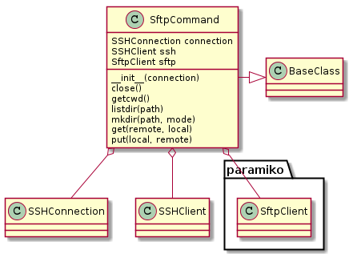

Since the paramiko SSHClient is somewhat buried within the SSHConnection this class was created to hide the need to pull it out and work with it directly. It is a convenience class to create the SFTPClient from the connection and only provides a sub-set of the client commands, the rest if desired would need to be passed to the client itself.
SftpCommand |

Example Use:
connection = SSHConnection(hostname='192.168.10.24', username='tester')
sftp = SftpCommand(connection=connection)
sftp.get('data.txt', 'remote_data.txt')
TestSftpCommand.test_ssh |
|
TestSftpCommand.test_sftp |
|
TestSftpCommand.test_close |
|
TestSftpCommand.test_getcwd |
|
TestSftpCommand.test_listdir |
|
TestSftpCommand.test_mkdir |
|
TestSftpCommand.test_get |
|
TestSftpCommand.test_put |
|
TestSftpCommand.test_connection_builder |
|
TestSftpCommand.test_connection_setter |